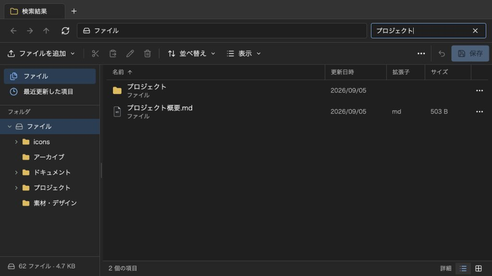

@likex/explorer
検索
名前検索は入力時に実行します。Enterでの実行や親の検索処理への委譲も選べます。
画面例を見る ↓入力時とEnter確定時の検索、および親へ委譲する検索の型・実装例です。
検索の実行タイミングと外部検索#
search と onSearchRequest を省略すると、現在の下書きにある全項目を対象に、名前を入力と同時に検索します。現在のフォルダ配下だけの検索ではありません。検索語の前後の空白は除去し、空になれば通常のフォルダ・お気に入り・最近の一覧へ戻ります。IME変換中は検索を実行しません。
入力時・Enter確定時を選ぶ#
// 既定：内蔵の名前検索を入力と同時に実行
<Explorer initialEntries={entries} />
// 入力中の文字と確定した検索語を分け、Enterで検索
<Explorer initialEntries={entries} search={{ trigger: "submit" }} />
// 外部検索だけを、最後の入力から300 ms待って実行
<Explorer
initialEntries={entries}
search={{ trigger: "input", debounceMs: 300 }}
onSearchRequest={searchFiles}
/>上の entries と searchFiles は親が用意します。submit では入力を編集しても確定済みの検索結果を維持し、Enterで新しい検索語を確定します。同じ語でEnterを押し直すと再検索でき、外部データの再確認にも使えます。IMEの変換確定に使うEnterでは検索しません。
ExplorerSearchOptions の trigger は "input" が既定です。debounceMs の既定は 0 で、外部ハンドラーを指定した input 検索だけに適用します。内蔵の名前検索と submit の確定は待機させません。検索をクリアしたときは待たずに通常一覧へ戻り、空の語で onSearchRequest を呼びません。
公開型と結果の契約#
ExplorerSearchOptions、ExplorerSearchRequest、ExplorerSearchContext、ExplorerSearchHandler は公開入口からimportできます。Explorer と ExplorerPopup で同じpropsを使えます。
import type {
ExplorerSearchHandler,
ExplorerSearchRequest,
ExplorerSearchContext,
} from "@/components/explorer";
const searchFiles: ExplorerSearchHandler = (
request: ExplorerSearchRequest,
context: ExplorerSearchContext,
) => {
if (context.signal.aborted) return [];
return request.entries
.filter(entry => entry.name.includes(request.query))
.map(entry => entry.id);
};| 要求・戻り値 | 契約 |
|---|---|
request.query | 前後の空白を除去した検索語。空文字の要求は送りません。 |
request.entries | readonly ExplorerEntry[]。要求時点の全体の下書きで、未保存の追加・改名・移動も含みます。配列・項目・source を変更しないでください。 |
request.location | ExplorerLocationInfo。通常フォルダは kind: "folder" と id・name・path、お気に入り・最近は kind: "favorites" | "recent" と id: null・path: null。外部検索の範囲は親が決めます。 |
request.tabId / windowId | 要求元のタブ・ウィンドウのID。要求の各フィールドは読み取り専用です。 |
context.signal | AbortSignal。fetch 等の取消しに渡します。 |
| 戻り値 | readonly string[] | Promise<readonly string[]>。entry.id を検索順位順に返します。ファイル本体を指す source.id とは別です。 |
返されたIDから現在の項目を表示し、未知IDと重複IDは無視します。返却順をそのまま保つため、外部検索中は通常の名前順・フォルダ優先・最近順で並べ直さず、並べ替えUIを隠します。[] は正常な0件の結果です。通信や解析の失敗はthrow / rejectで伝え、正常な0件へ置き換えないようにします。
検索語・タブ・現在地・下書きが変わると古い要求を中断し、新しい条件の検索を扱います。クリア、外部検索の解除、features.search: false、アンマウントでも中断します。ハンドラーがsignalを無視して後から完了しても、古い結果は反映しません。features.search: false は検索欄・ショートカット・内蔵検索・外部要求をまとめて無効にします。
親の再レンダーで onSearchRequest の関数参照だけが変わっても、再検索しません。インライン関数を渡すことができ、最新のコールバックが読むキャッシュや親stateは、次の検索語変更・Enter確定・下書きや現在地の変更等で使います。親stateの更新だけで検索結果を更新する契約ではありません。
親の本文キャッシュを検索する#
Explorerは検索のために readFile や File.text() を自動で呼びません。親が取得・抽出済みの本文をキャッシュしている場合は、名前と本文を組み合わせて検索できます。既存本体は source.id、未保存のローカル本体は source.file をキーにする例です。
"use client";
import Explorer, {
type ExplorerEntry,
type ExplorerSearchHandler,
} from "@/components/explorer";
type Props = {
initialEntries: readonly ExplorerEntry[];
textBySourceId: ReadonlyMap<string, string>;
localTextByFile: ReadonlyMap<File, string>;
};
export function CachedContentExplorer({
initialEntries, textBySourceId, localTextByFile,
}: Props) {
const onSearchRequest: ExplorerSearchHandler = ({ query, entries }, { signal }) => {
if (signal.aborted) return [];
const needle = query.toLocaleLowerCase("ja-JP");
return entries.filter(entry => {
const source = entry.source;
const text = source?.kind === "existing"
? textBySourceId.get(source.id) ?? ""
: source?.kind === "local"
? localTextByFile.get(source.file) ?? ""
: "";
return `${entry.name}\n${text}`.toLocaleLowerCase("ja-JP").includes(needle);
}).map(entry => entry.id);
};
return <Explorer
initialEntries={initialEntries}
onSearchRequest={onSearchRequest}
style={{ height: 640 }}
/>;
}本文の取得・形式ごとのテキスト抽出・容量制限・更新時のキャッシュ無効化は親が管理します。この例はキャッシュにない本体を読み込まず、名前だけを検索します。キャッシュを更新した後は検索語を変更するか、Enterで再検索します。
セマンティック検索APIへ接続する#
次は、親が実装した同一オリジンの検索APIへ接続する最小例です。APIは query と folderId を受け取り、順位順のID配列（例：["file-7", "file-3"]）を返す想定です。下書き全体や File は送信しません。
"use client";
import Explorer, {
type ExplorerEntry,
type ExplorerSearchHandler,
} from "@/components/explorer";
function parseSearchIds(value: unknown): readonly string[] {
if (!Array.isArray(value) || !value.every(
(id: unknown): id is string => typeof id === "string" && id.length > 0,
)) {
throw new Error("検索APIの応答は空でない文字列IDの配列である必要があります");
}
return value;
}
const searchFiles: ExplorerSearchHandler = async ({ query, location }, { signal }) => {
const response = await fetch("/api/files/search", {
method: "POST",
headers: { "Content-Type": "application/json" },
body: JSON.stringify({
query,
folderId: location.kind === "folder" ? location.id : null,
}),
signal,
});
if (!response.ok) throw new Error(`検索に失敗しました (${response.status})`);
const value: unknown = await response.json();
return parseSearchIds(value);
};
export function SemanticExplorer({ entries }: { entries: readonly ExplorerEntry[] }) {
return <Explorer
initialEntries={entries}
search={{ trigger: "submit" }}
onSearchRequest={searchFiles}
style={{ height: 640 }}
/>;
}この例では通常フォルダのIDを渡し、お気に入り・最近では null を渡します。null の範囲や、本文検索・ベクトル検索・メタデータ検索の組み合わせは親のAPIで定義します。認証、対象ワークスペース、フォルダ・項目の閲覧権限はサーバーで検証します。クライアントからの folderId やID一覧を権限として信用せず、認可済みの結果だけを返してください。
現在の entries にないIDは表示しません。追加の検索結果を読み込む場合は、必要な項目と祖先フォルダを親が取得し、未保存変更の確認を含む onRefresh 等の一覧更新で管理します。検索コールバック自体は項目を追加・変更しません。バックエンドに未保存の source.kind === "local" の File は索引にないため、必要なら親がローカル本文キャッシュの結果と合成してIDを返します。未保存の改名・移動・新規フォルダもサーバーには未反映であることを考慮します。
画面例
{kind=link}
